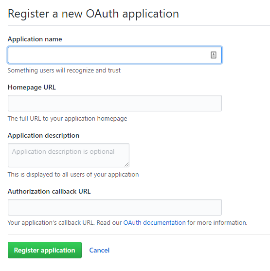
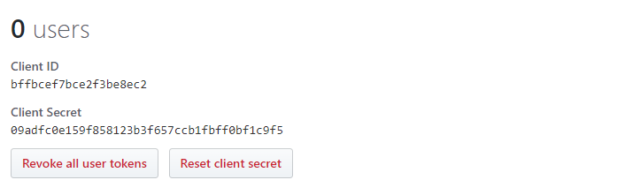
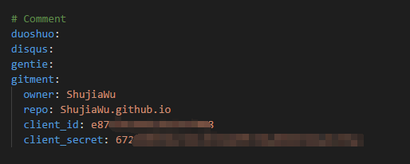
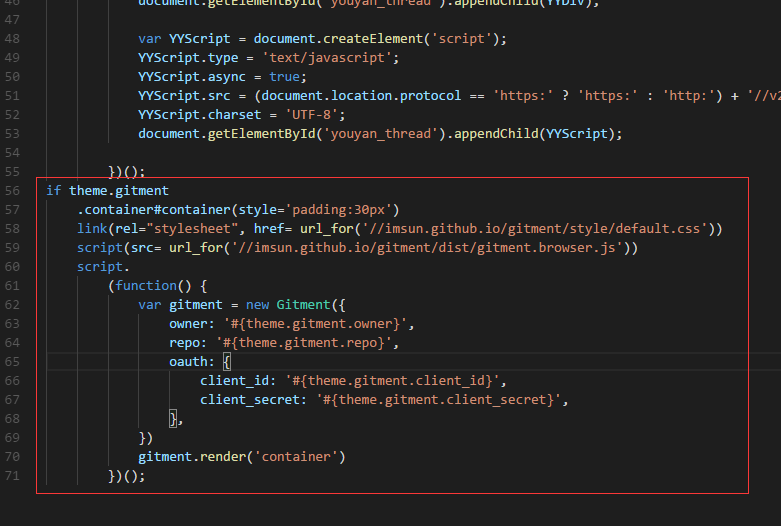
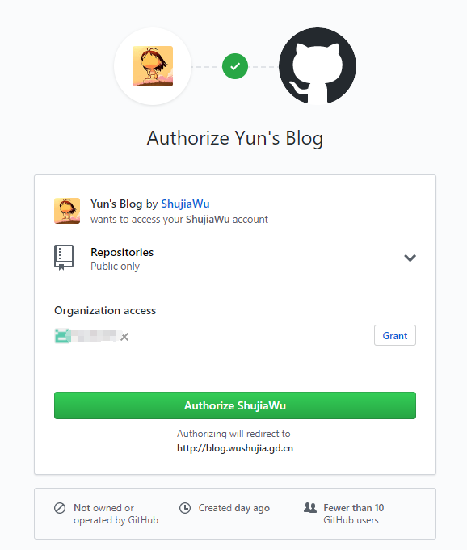
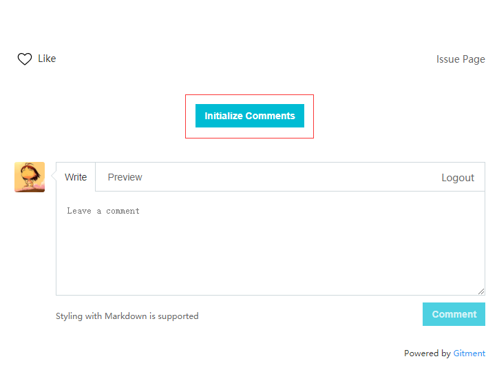
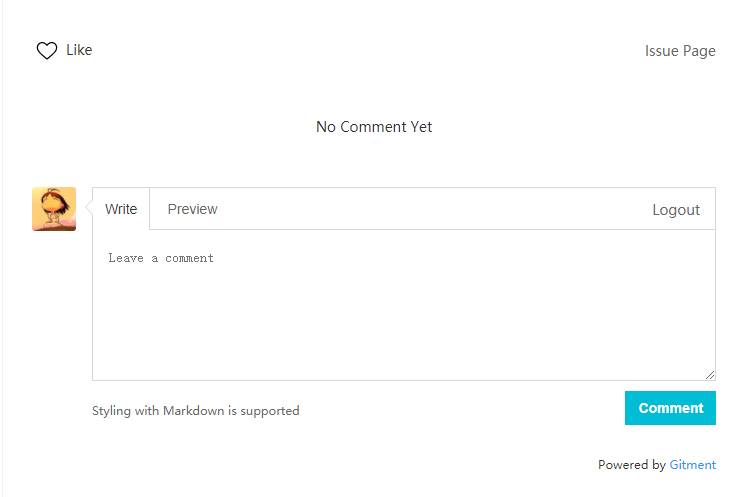
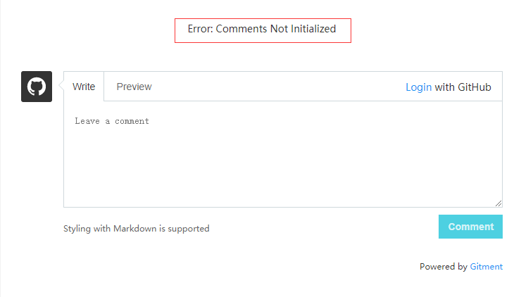

Hexo 集成 Gitment
前言
好久没有写博客了（基本上已经荒废了），平常的笔记都记录到其他地方，最近打算重新整理一下笔记，把笔记整理到博客上。然后之前的多说评论系统已经关闭了，无奈之下只能重新再整个新的评论系统。在网上逛了一圈之后，进过对比最后选择了 Gitment。
集成过程遇到点坑，记录下来，希望对其他人有所帮助。
相关资料
github 创建 OAuth application 地址
安装过程
创建 OAuth application
Step 1
首先你得有个 github 账号，没有赶紧去 注册 一个吧。
Step 2
进入 Settings -> Developer settings -> New OAuth App, 或者直接点击 OAuth application 进入。

字段说明：
| 字段 | 说明 |
|---|---|
| Application name | 应用名称 |
| Homepage URL | 主页地址 |
| Application description | 应用描述 |
| Authorization callback URL | 授权回调地址（写博客的地址，如： http://blog.wushujia.gd.cn） |
Step 3
创建完成后会跳转至 Application 详细设置页，找到你的 Client ID 和 Client Secret ,如下图所示，这个是配置Gitment用的。

集成Gitment到Hexo
大概的是过程如下的：
- 引入CSS文件和JS文件
- 添加评论区的容器到页面中
- 配置Gitment
- 初始化issue
引入 CSS文件 和 JS文件：
|
|
添加评论区容器：
|
|
配置 Girment：
|
|
集成到anatole中
我自己用的是 anatole 主题，下面是我的完整的集成过程：
Step 1 将配置信息写入到 themes/anatole/_config.yml

Step 2 将CSS、JS添加到页面中
找到 themes/anatole/layout/partial/comments.jade，将一下代码加入到最后面：
|
|

初始化评论区
进入任意一篇文章，在评论区使用点击登录，进行授权登录。

授权成功后点击 Initialize Comments 进行初始化。

当看到以下界面时表示已经成功。

错误处理
出现 Error：Comments Not Initialized 的原因可能是没有进行授权，或者配置信息不正确，请核对后重试。还有就是本地预览的时候也是会出现这个错误的。
